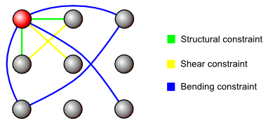

This cloth simulation is implemented using the three.js 3D WebGL library.
Have some fun and modify the wind and gravity settings. Pick up a point and move it by holding the left mouse button and "stick" it by holding the left shift button and releasing the mouse butotn.
Slow? Try turning down the constraint iterations (the amount each constraint is applied per time step) or reducing the number of particles in the simulation.
| x | y | z |
|
Iterations
|
Gravity
|
A cloth simulation is a collection of particles that have contraints between them that must be satisfied. This simulation has three distinct type of constraints implemented, shearing, structural, and bending. At each timestep the particles pull / push each other depending on the type of constraint, and the rest length between the particles.
If WebGL is not supported in your browser, canvas mode will be used instead. Since this is much slower than WebGl, it would be wise to use a browser with WebGL capabilities or reduce some settings. There will be a notification in the top left corner of the simulation window if canvas mode is enabled.
Note: WebGL can be enabled in Safari under developer options.
left click pick up / move ponit
right click pan camera
left shift stick point
mouse wheel zoom